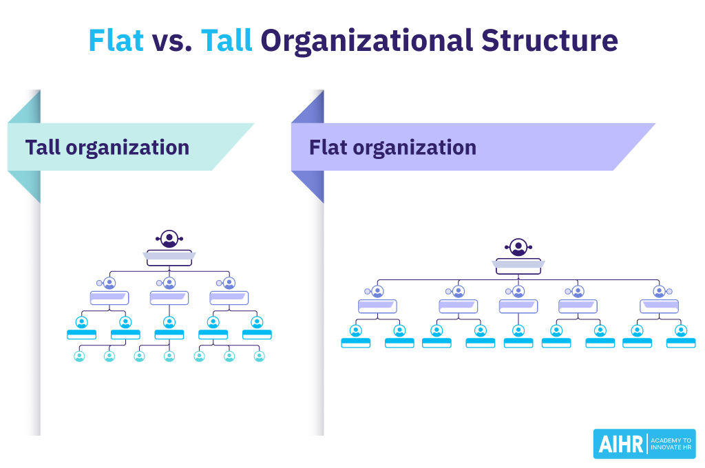

Look at the tall and flat organisational structures. What do you think are some advantages and disadvantages of each?

Match the words and phrases in the box with the definitions below.
- a move to a more important job in a company or organisation —
- new, different and better than before —
- a system of organisation in which people are divided into levels of importance —
- a complicated official system that has a lot of rules and processes —
- organised the control of an organisation so that everything is done or decided in one place —
- moved parts of an organisation, etc. from a central place to several different smaller ones —
- promotion
- innovative
- hierarchy
- bureaucracy
- centralised
- decentralised
Use the words from Exercise 2A to talk about the tall and flat structures from Exercise 1.
Tall organisations
Tall organisations have lots of management levels. There is generally more bureaucracy and decision-making is slow and centralised in the top levels of the hierarchy (top-down decision-making). A criticism of tall organisations is that they are slow to innovate and therefore are less competitive. However, there are also many opportunities for promotion. Large complex corporations with a lot of staff are typical examples of tall organisations.
Flat organisations
Flat organisations are less hierarchical. There are few levels of middle management. Decision-making is more decentralised and therefore quicker. The lines of communication between staff and senior managers are more direct and two-way (top-down as well as bottom-up). Flatter organisations are said to be more creative and innovative. However, with fewer management levels, there are fewer chances of promotion. Managers can have more responsibilities and stress. Start-ups with fewer staff are typical flat organisations.
Look at the two company profiles below. Do you think they are likely to have a flat or tall structure? Why?
Listen to the radio discussion with Janet Wood, an organisation consultant. Check your answers from Exercise 3.
Listen again and decide if these sentences are true (T) or false (F). Correct the incorrect sentences.
- Organisations with tall structures can change and innovate fast.
- Bob and Genevieve Gore started their company in the 1960s.
- Employees voted to decide who should be the CEO of Gore.
- 'Holacracy®' is a system without traditional managers.
- All the functions at Zappos are now done by teams.
- The transition at Zappos will take a few months to complete.
- F — tall organisations are usually slow to change and innovate
- T
- F — employees vote, but for things like leadership of projects, not the CEO
- T
- T
- F — the transition will take a few years, not a few months
Choose the correct option. Listen to the discussion again if necessary.
- Janet Wood seems
a) critical of hierarchies b) positive about hierarchies c) sceptical about flat structures - Which statement about W. L. Gore is true?
a) Employees work in teams of 30 b) Staff are called associates c) Nobody has a job title - Which statement about Zappos is true?
a) The company started two years ago b) Staff work in about 500 teams called circles c) The lead link of a circle decides what everyone does - What do W. L. Gore and Zappos have in common?
a) Senior executives are elected by employees b) Any member of staff can start a new project team c) Staff decide their own roles in a team
- b — positive about hierarchies (she sees pros and cons, but is generally positive about moving away from rigid hierarchy)
- b — Staff are called associates
- b — Staff work in about 500 teams called circles
- b — Any member of staff can start a new project team
Look at these extracts from the discussion. Match each one with its function (a–d).
- You decide what you are going to contribute to the team. —
- Zappos has a training session next week. —
- I'm flying to Las Vegas tomorrow. —
- I'm sure that's going to be a very interesting experience. —
- 1 → a — personal intention
- 2 → d — scheduled event
- 3 → b — plan/arrangement
- 4 → c — prediction
- 1 → be going to + infinitive (are going to contribute)
- 2 → Present Simple (has)
- 3 → Present Continuous (am flying)
- 4 → be going to + infinitive (going to be)
We can talk about the future using a variety of forms depending on the function:
Present Simple — scheduled events
We use the Present Simple for events scheduled to happen (something that is timetabled).
I have a job interview tomorrow. Our train doesn't leave until 8.30 this evening. Does the departmental meeting start at 9 o'clock on Monday as usual?Present Continuous — plans/arrangements
We use the Present Continuous for plans/arrangements (something you have confirmed for the future). This often involves other people.
I'm visiting the suppliers tomorrow. He's on holiday so he isn't coming to the meeting on Friday. Are you having a leaving party next week?Be + going to + infinitive
We can use be + going to + infinitive in two different ways:
i. To talk about personal intentions (something you want to do).
I'm going to get to the office early tomorrow. We aren't going to change the software. Is she going to come to the meeting?Note: We use the Present Continuous more for plans/arrangements with other people and be + going to + infinitive for personal intentions. However, often we could use either form because many events can be seen as either plans/arrangements or intentions.
I'm visiting the suppliers tomorrow. (This is a plan/arrangement between the supplier and myself.) I'm going to visit the suppliers tomorrow. (This is my intention.) I'm going to get to the office early tomorrow. (This is my intention.) I'm getting to the office early tomorrow. (This is not correct because it is not a plan/arrangement.)ii. To talk about predictions when something is probable (something you expect to happen).
He's very good. I think he's going to get promoted soon. Look at this office! It's not going to be big enough for four people. She does a great job. I'm sure they're going to make her Chief Executive.Decide which is the best option in each sentence and explain your choice. There may be more than one possible answer.
- What time the first flight on Sundays?
a) does … leave b) is … leaving c) is … going to leave - When I get more free time, I a gym.
a) join b) am joining c) am going to join - He can't remember what time he the client tomorrow.
a) visits b) is visiting c) is going to visit - I to her email until later today.
a) don't reply b) am not replying c) am not going to reply - We some friends after work this evening.
a) meet b) are meeting c) are going to meet - Susan hasn't studied all year. She her final exams next week.
a) fails b) is failing c) is going to fail - The conference until 10 o'clock but let's get there early.
a) doesn't start b) isn't starting c) isn't going to start - we in time to catch the train? There's a lot of traffic.
a) Do we arrive b) Are we arriving c) Are we going to arrive
- a does…leave — scheduled timetable event
- c am going to join — personal intention, no confirmed arrangement yet
- b or c is visiting / is going to visit — both work; arrangement or intention
- b or c am not replying / am not going to reply — intention not to act
- b or c are meeting / are going to meet — confirmed plan or intention
- c is going to fail — prediction based on evidence (hasn't studied)
- a doesn't start — scheduled event (timetable)
- c Are we going to arrive — prediction given the traffic situation
Complete the conversation with appropriate future forms, using contractions where possible. There may be more than one possible answer.
- A: Hi, Juliana. What time (the department meeting / start) tomorrow?
- B: At 10 o'clock as usual, but I think I (be) about fifteen minutes late. I have a dentist's appointment.
- A: (you/be) able to talk after your trip to the dentist's?
- B: Yes, it's just a check-up. In fact, I (give) a presentation on the company restructuring.
- A: I'm sure that (be) interesting. Is it true we (move) to offices outside the city?
- B: I (not tell) you anything before the meeting. You know that.
- A: Well, I (sit) right at the front. I don't want to miss anything.
- does the department meeting start — scheduled event
- I'm going to be — prediction/intention about being late
- Are you going to be — asking about intention/possibility
- I'm giving — confirmed arrangement
- that's going to be / we're moving — prediction / plan
- I'm not going to tell — personal intention (refusal)
- I'm going to sit — personal intention
Listen to the conversation. Which future forms do the speakers use in each case? Why do you think this is?
✍️ Writing task — homework
Write an email to a friend or colleague about a real or imaginary trip you have planned for work or pleasure. Write 100–120 words.
- 1Say when and where you are going and how you are travelling there.
- 2Say where you are staying.
- 3Mention your predictions for the weather.
- 4Talk about your intentions and arrangements for the visit.
Note for teacher
Consider spending 5 minutes at the start of next lesson reviewing the email together — check which future forms she used and why, then correct together rather than just marking it.